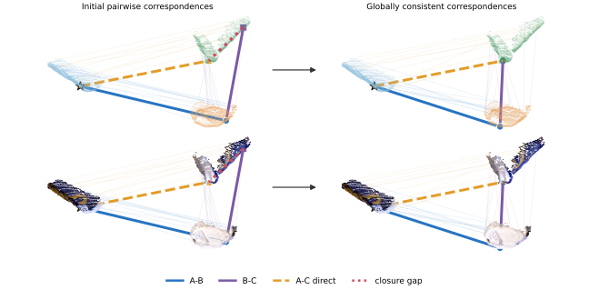
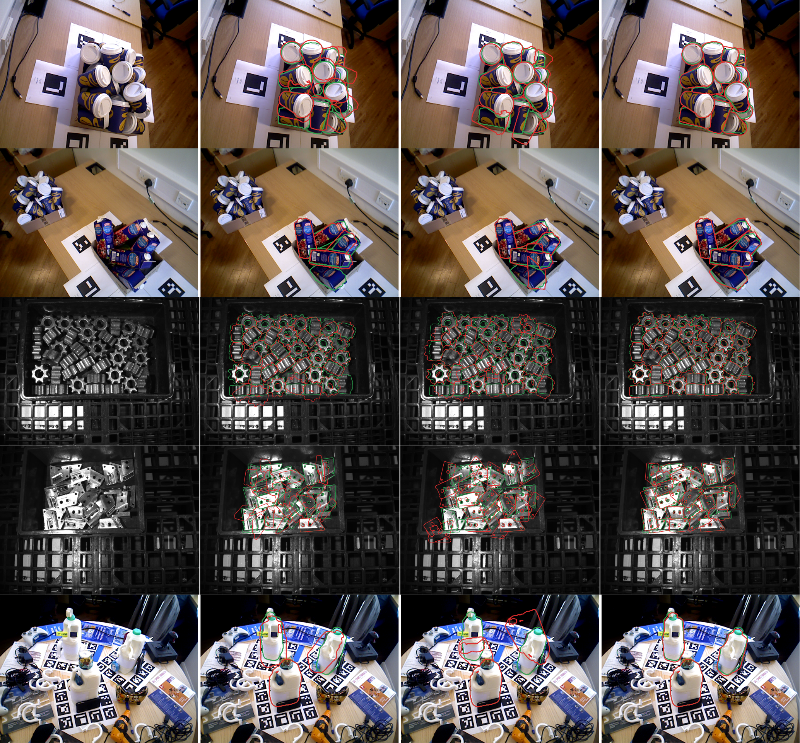

Object 6D pose estimation formulations have progressively reduced reliance on object-specific priors, evolving from explicit 3D models to multi-view object captures to single reference images. We take this progression to its extreme by introducing prior-free relative 6D pose estimation, which lifts the assumption of knowing which object is to be posed within the scene. This novel setting aims to estimate the relative poses of multiple instances of an unknown object within the same image, without requiring CAD models, templates, or reference images. We solve this by formulating a novel method (PROSE) that finds coarse correspondences between object instances using multimodal foundation features, thus requiring no training. We refine these correspondences by imposing cycle consistency across tuples of instances, and leverage the resulting globally consistent correspondences to estimate the relative 6D pose between any pair of instances. To enable systematic evaluation, we design a novel benchmark (PRENCH) built from three multi-instance BOP datasets and enriched with task-specific metadata. PROSE consistently outperforms baselines obtained by adapting state-of-the-art single-image methods to the proposed setting, while requiring neither task-specific supervision nor additional learned components.

| Method | IC-BIN | IC-MI | XYZ-IBD | |||||||||
|---|---|---|---|---|---|---|---|---|---|---|---|---|
| AR ↑ | ADD(S) ↑ | RE (°) ↓ | TE (mm) ↓ | AR ↑ | ADD(S) ↑ | RE (°) ↓ | TE (mm) ↓ | AR ↑ | ADD(S) ↑ | RE (°) ↓ | TE (mm) ↓ | |
| One2Any | 17.7 | 61.0 | 70.5 | 26.9 | 47.7 | 98.0 | 47.2 | 12.3 | 9.2 | 49.2 | 85.0 | 33.2 |
| ConceptPose | 18.8 | 58.8 | 76.2 | 36.6 | 50.8 | 80.2 | 51.1 | 29.1 | 36.1 | 70.1 | 64.6 | 24.4 |
| PROSE (ours) | 38.0 | 83.3 | 61.3 | 16.8 | 70.3 | 100 | 30.4 | 4.6 | 55.8 | 92.1 | 28.6 | 9.1 |
| Improvement | +19.2 | +22.3 | −9.2 | −10.1 | +19.5 | +2.0 | −16.8 | −7.7 | +19.7 | +22.0 | −36.0 | −15.3 |

If you find this work useful, please cite:
@misc{khodabandehloo2026prior,
title = {Prior-free Relative 6D Pose Estimation of Multiple Object Instances},
author = {Khodabandehloo, Behdad and Caraffa, Andrea and
Boscaini, Davide and Poiesi, Fabio},
year = {2026},
eprint = {2609.08949},
archivePrefix = {arXiv},
primaryClass = {cs.CV},
url = {https://arxiv.org/abs/2609.08949}
}